計量法の規定に基づき制定された計量法施行令に定められた期間内（10年に1回など）に、お客さま宅の電力量計を取り替えて正確に電力量を計量できるようにする業務で、毎年約100万件の取替工事を実施しています。計器の取替工事を行う拠点として関西地域に18ヶ所あり、約200名の工事員により計器取替工事を実施しています。
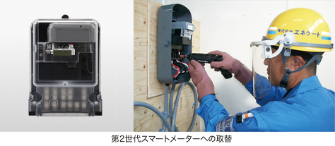
戸建てやマンション、店舗などいろんな場所の電力量計の取替を行っています。
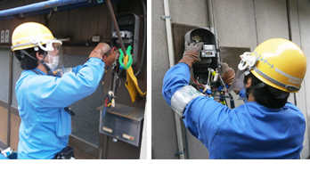
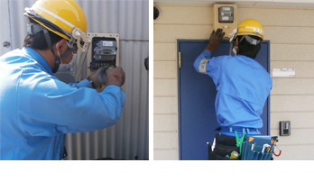
工事所の模擬訓練設備では定期的に基本動作訓練を行いスキルチェック。気になることがあれば先輩に相談、作業の不安を解消していきます。
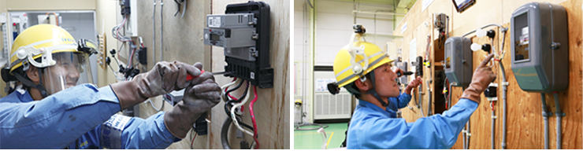
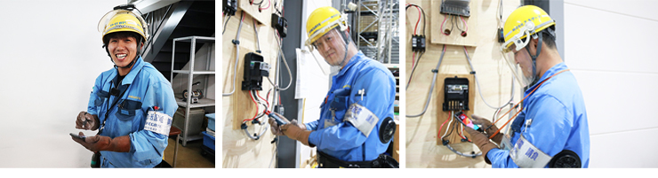
社内業務も主任や先輩社員が丁寧に教えています。
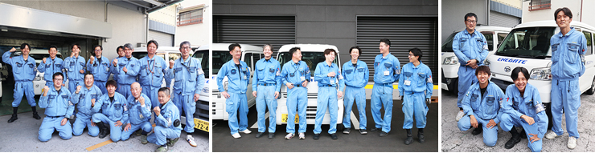
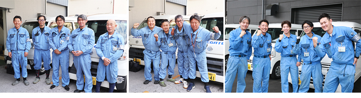
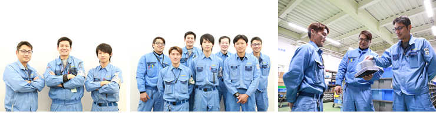
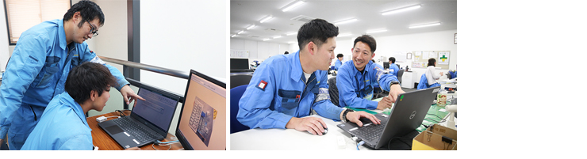
半期に1回、事業所ごとに研修会を実施しています。他工事所とコミュニケーションをとり交流を深める機会になっています。
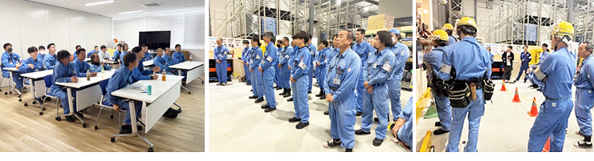
住宅街を走ることが多く運転に気を遣います。年に1回訓練場で車両実技訓練を行い、運転技能をチェックし安全運転のスキルを高めています。
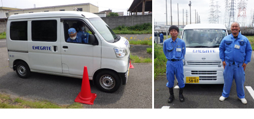